Mae Yen Waterfall
A recollection of my hike to Mae Yen Waterfall in Pai, Thailand
Preamble
At the end of July 2024 I left Colorado to travel in Southeast Asia for two months. This included a visit to Thailand which lasted sixteen days. Half of those I spent in Pai, a small town in the north of the country. There are several publicly known waterfalls in Pai. Of them, I saw the Mae Yen Waterfall, which I discovered in my search for a long day-hike in the area. Here is the story of that hike, which I set out for on the morning of September 2, 2024.
Hike to Mae Yen Waterfall
The morning starts like many others in Pai. I wake up in my hostel bed and, after a few moments, stumble outside in my flip-flops and shorts to a sleepy Pai town. I begin walking down the street, turning a corner at one of the few stoplights in town so that I can visit a café for rice porridge. After eating, my belly is warm and full of rice, pork, and broth. I return to the hostel to put on some more appropriate hiking gear. Then, I head east on the road leading out of Pai, making sure to stop at 7/11 for rations.
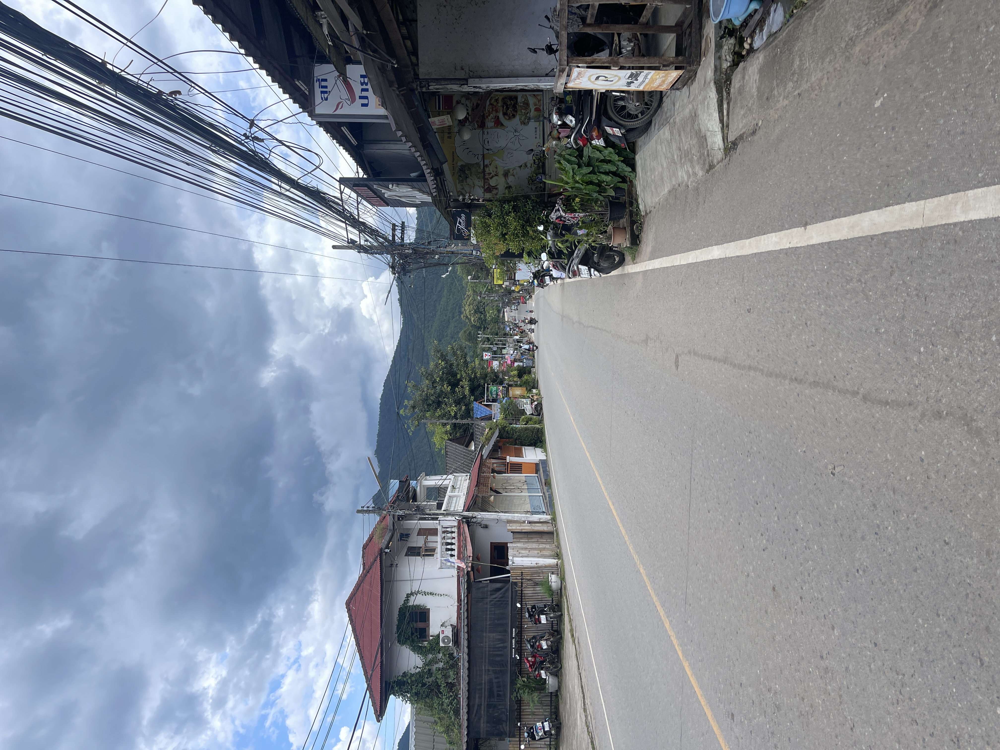
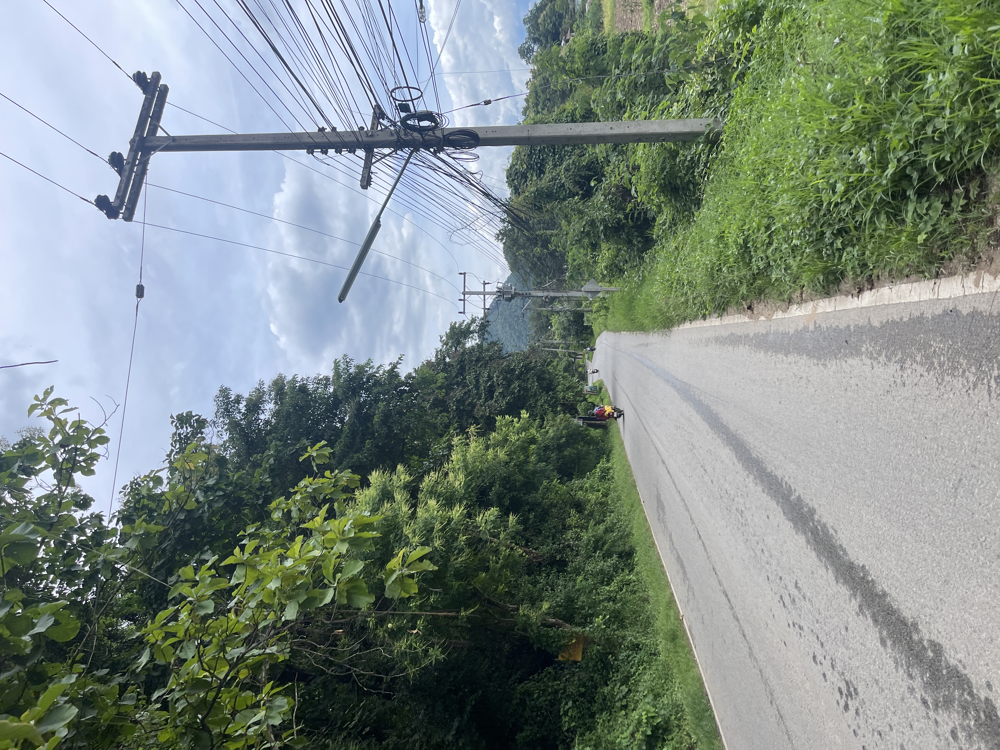
The road out of Pai.
To get out of town, I must cross a short, rusty white bridge. Once I do, the motorbikes on the street come fewer and farther in between. Soon, it feels like civilization has fallen away behind me. I eventually turn left onto a narrow road, where I encounter a brown dog. Panting with his tongue out, he stops in the middle of the street to study me. I pause as well for a moment, then walk forward again. He is friendly and lets me pass.
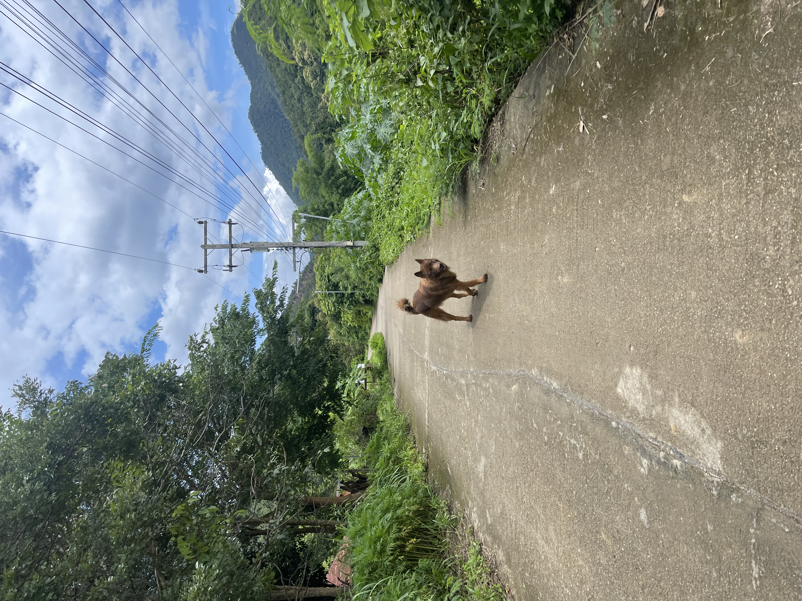
When the road turns into a dirt path, I realize I’m at the trailhead. In my head, I do a mental checklist. The time is 12 P.M. My hike is to be 10 miles long, 5 miles out and 5 miles back. It’s just above 80 degrees fahrenheit, and there is a strong possibility of rain. Before I set off on the trail, I make sure to douse myself in mosquito repellant.
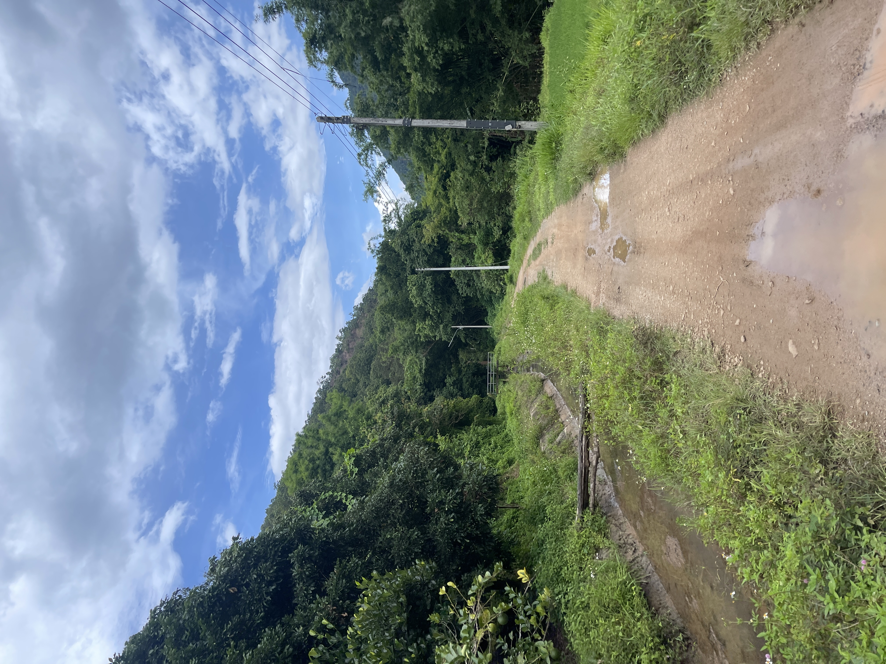
Within a few minutes of walking I appear next to the river which the trail follows. In it, I spot two other travelers standing in the stream, holding their pants up over their knees. I approach them, and we chat about what we know about the trail. For me, that's the info from AllTrails users who have warned that to hike this trail one must cross the river some fifty to a hundred time. After crossing the stream together, my shoes have already become soaked and filled with sand. I stop to confront this new and uncomfortable sensation in my feet, as well as to turn my hiking pants into hiking shorts.
A few minutes later, I catch back up with the couple. They are standing on the river bank watching four water buffalo in its stream. One of the buffalo is lying peacefully in the riverbed as the water curves around its body. I stand next to them and watch, too. We are charmed by these majestic bovines. I continue on the trail, while the hikers stay behind to watch the buffalo. Almost immediately afterwards there is a split in the trail. I pause to inspect it, confused, and then I notice on my right there is a Thai man sitting in a hut. When I look at him, he points me in the right direction of the trail. I smile and thank him.
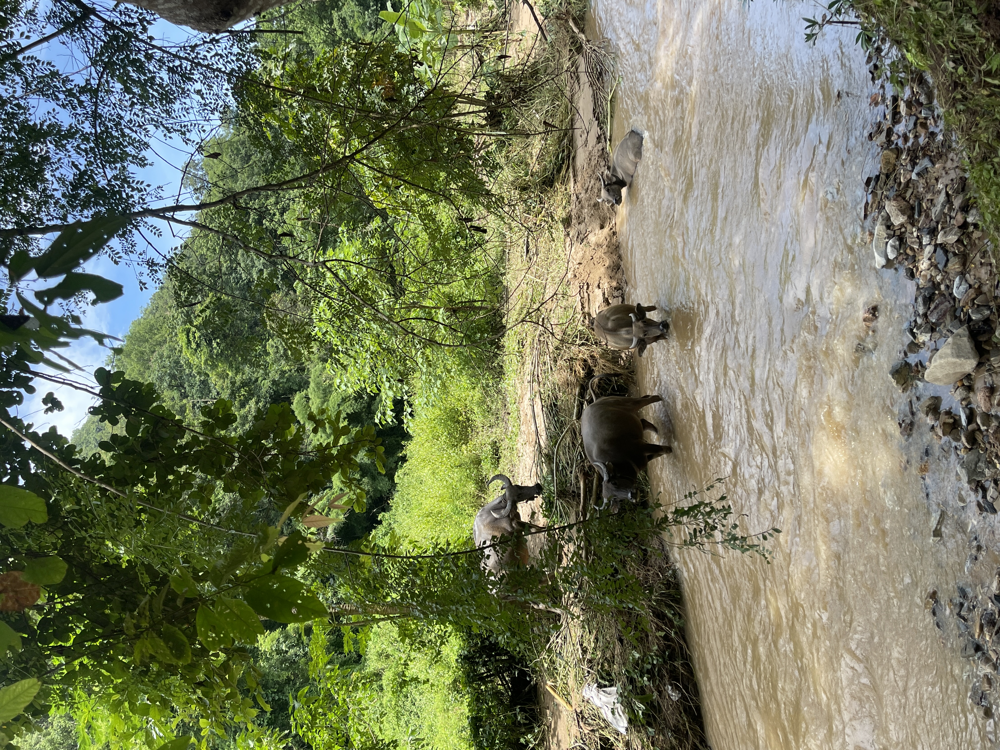
As the trail narrows, I become excited, so much so that I find myself running through the jungle. I feel like Indiana Jones, and I can't stop laughing at that thought. I hear the theme from the movie's soundtrack in my head and consider listening to music, but think better of it on account of my unfamiliarity with the terrain. This choice heightens my sensitivity to the jungle noises, and when the river becomes audible, I know I'm about to cross the river again. At the crossing, the water is shallow, only coming up to my knees at its deepest points. The cold water refreshes my shins and calves. The current is strong, but with caution I ford the river. Everything's going off without a hitch so far.
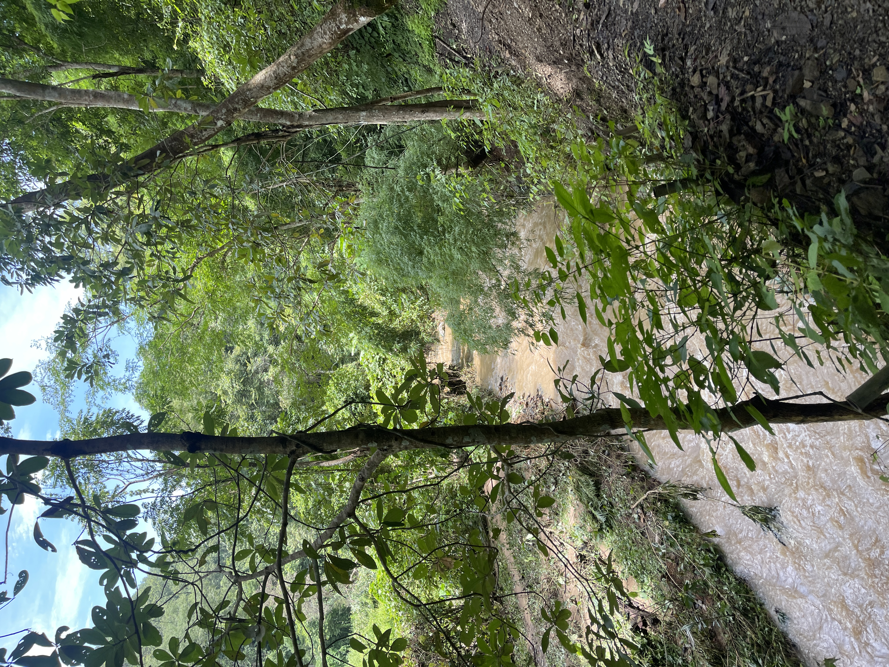
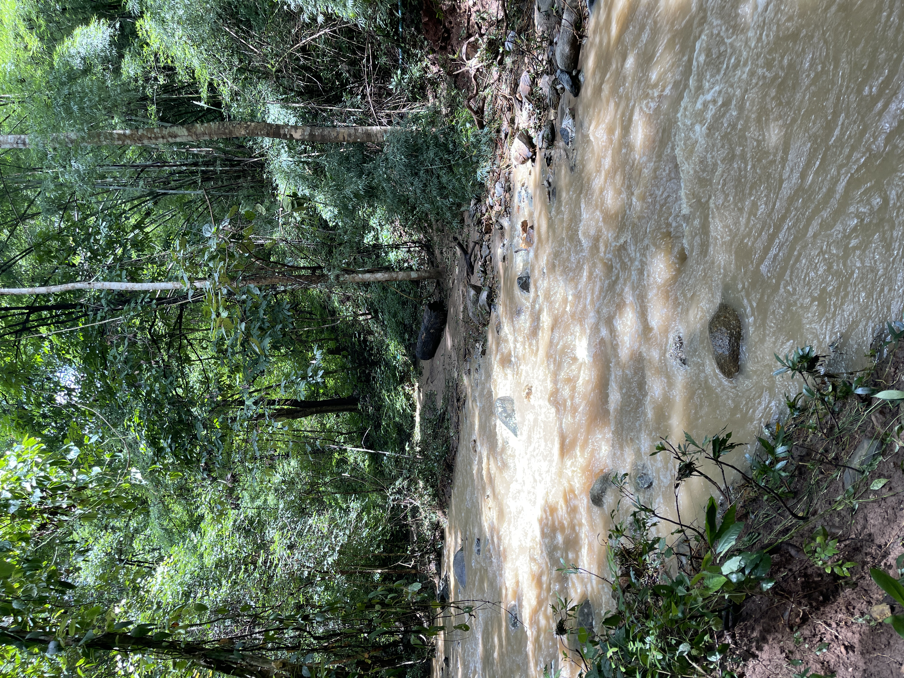
One of the first of many river crossings.
After the crossing, I come across a dark, weather-stained shack on stilts in the wooded valley. It has real horror movie potential. I imagine Leatherface is up in it, sleeping with a rusty chain saw. When I discard this idea, though, I realize that what I really want to know is the more mundane history of the shelter. Who put it there and when, and for what purpose? I entertain myself with other made-up stories about it as I continue hiking.
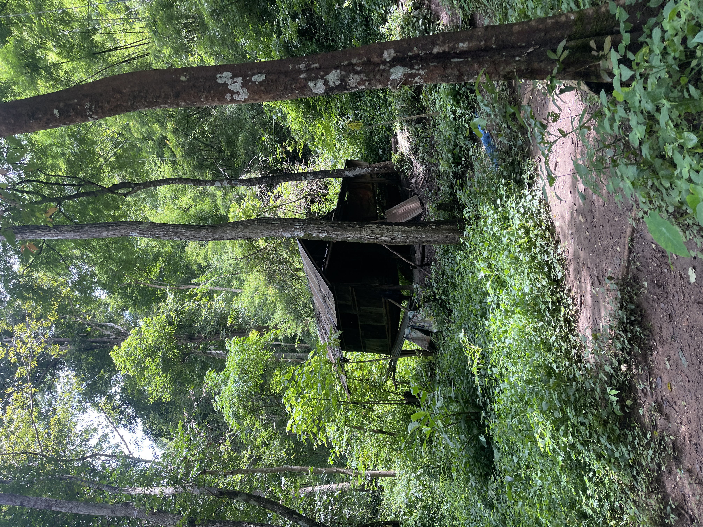
A little while later, I check the time; it's 1 P.M. The river crossings have increased in difficulty, and the one I'm facing now is particularly intimidating. There are large rocks which jut out from the riverbed, and the turbulent flow of water around them has created a rapid. I attempt to hold onto the largest of these rocks for support while crossing it, but am quickly deterred from the idea once I take a closer look and discover fishing spiders inconspicuously scattered across its surface. This begins a thought process about what other wildlife lurks in the jungle. My anxiety builds as I cross the murky water.
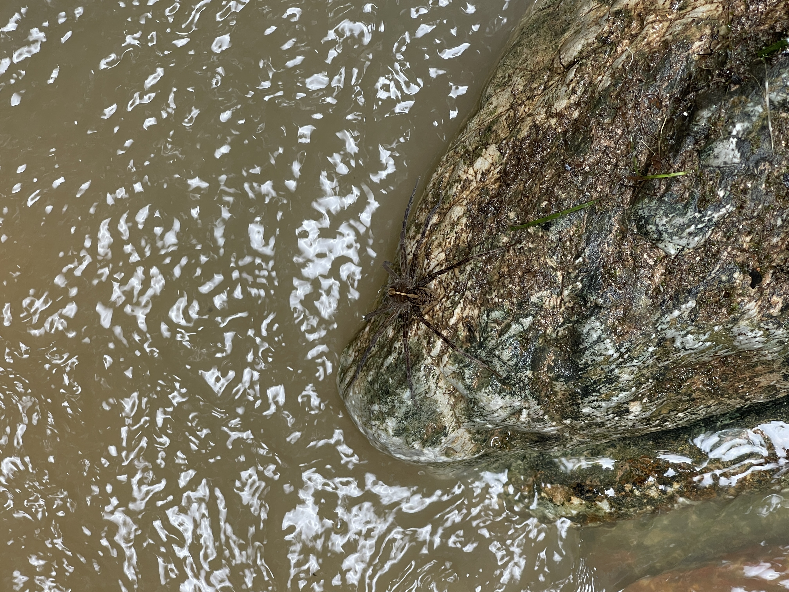
As I hike, my mind conjures frightful images. First, I think of the five-foot monitor lizards I saw in the canals of Bangkok. A more violent image follows it, one I remember from a documentary. It’s of a child in Uganda who witnesses the maiming of her cow by a Nile crocodile after leading it to the river for a drink. In my head, I can hear the voice of Jeremy Wade, host of TV show *River Monsters*. He is describing “the goonch,” a deadly gargantuan catfish which drags people to the depths of India's Kali river. Despite these unsettling images, I'm able to bring myself some solace by declaring that the river is too turbulent and shallow for those sorts of creatures to inhabit. The validity of such a statement is dubious, but I choose to believe it anyways.
As the trail becomes increasingly difficult to follow, though, I feel a bond with the river strengthening. The trail often leads straight into the river, with no continuation on the other side. My only option is to hike upstream to rediscover the trail. In some instances, the trail is so faintly worn that I must duck under trees and push my way through jungle thickets to continue. I am blissfully ignorant to the sundry species of venomous snakes which are native to Thailand. These include pit vipers, banded kraits, and king cobras.
It's probably 1:30 P.M. and I've just passed three other hikers in a group coming back on the trail. They are the only other humans I encounter on the way to the waterfall. After several more river crossings, and some cursing at its rapids, I happen across a sign for a steep bypass to the waterfall. This allows me to hike up the side of the gulch and along its ridge, avoiding a segment of the river. As I hike up the path the sound of running water fades away. I look across the valley towards the opposing ridge through the trees, releasing the tension I carried along the river. I even stop to study a line of ants busily flowing across the trail.
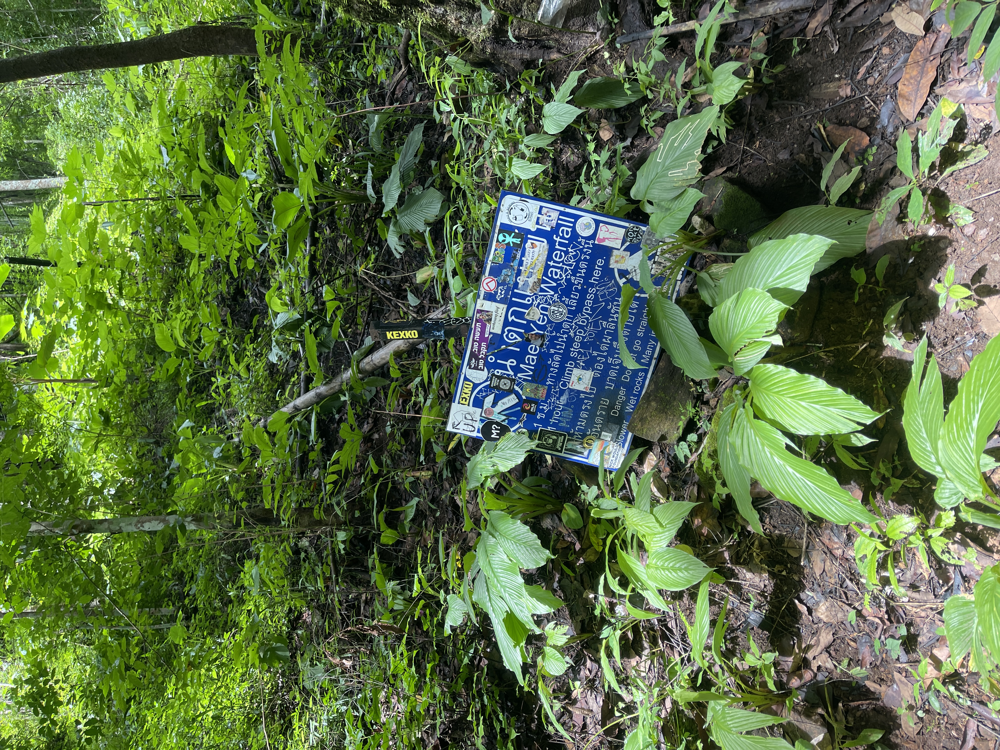
The bypass eventually leads me back down to the river. Like before, I follow it upstream. In the surrounding land, I discover the tracks of what are presumably water buffalo. Additionally, I begin to hear the waterfall. My steady footsteps along the trail guarantee a crescendo of crashing water, and after rounding one last bend, the fall comes into view. It cascades three tiers down into a small reservoir, feeding the river. It’s 2:30 P.M. and I’ve gotten as close as I can. Sitting on a large boulder, I eat my snacks and watch the falling water. Nobody else appears.
The Mae Yen Waterfall.
I appreciate the waterfall for a few moments longer before heading back on the trail in order to conserve daylight. The couple who was hiking behind me hasn't appeared yet, and I assume they have given up and turned around before reaching the waterfall. I follow the bypass back up to the valley's ridge. After descending to the river, I accidentally I hike downstream too far, missing where the trail picks up on the left-hand side. I lose several minutes in the process of backtracking. Once I rediscover the trail, though, I am able to stay on it for the rest of the way, recrossing all the same rapids.
In the jungle, I pause to look at what I initially thought was an unremarkable piece of rock sitting atop a tree stump. Upon closer inspection, an eroded figure of the Buddha reveals itself. Then, during one of my river crossings, I stop to examine a yellow frog sitting on a rock in the river.
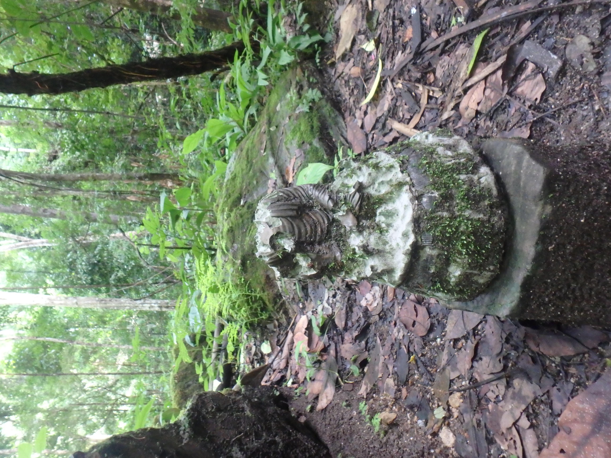
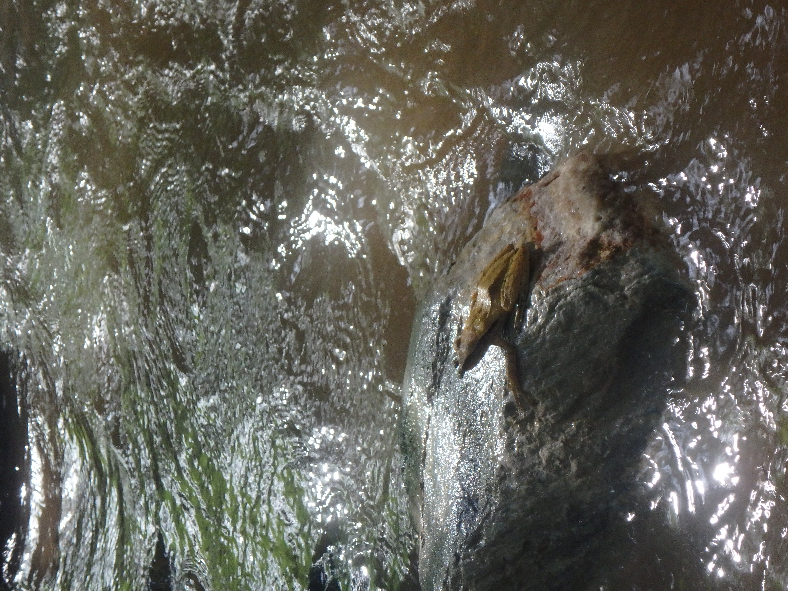
1: A broken Buddha. 2: A yellow frog sits on a rock in the river.
Eventually I make it back to the wide and well-trodden dirt path at the beginning of the trail. There, I encounter more people. There are a few foreigners hanging out near the river, and when I get to the local road I start passing lots of Thais on motorbikes. A young man and woman are picking fruits from a tree on the side of the road. Sunset is approaching as I walk along the road towards the thoroughfare. I become excited at the thought of telling my friend I made in town that I successfully completed the hike. Along the local road, I stop several times to admire the rice fields, as well as the cattle milling about.
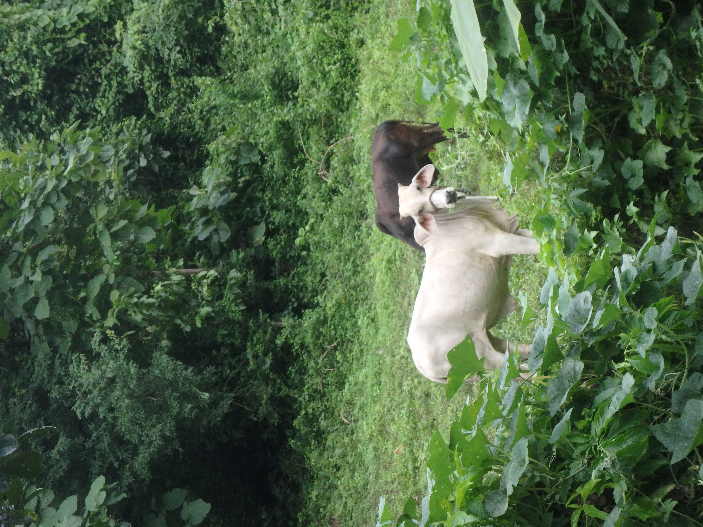
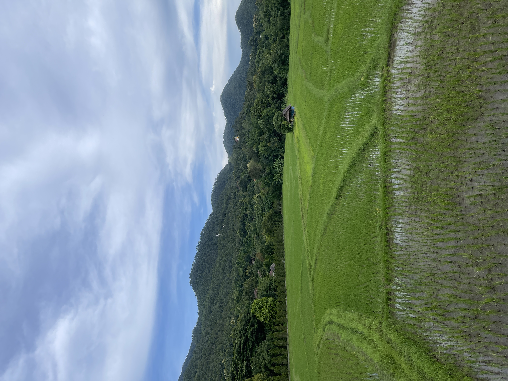
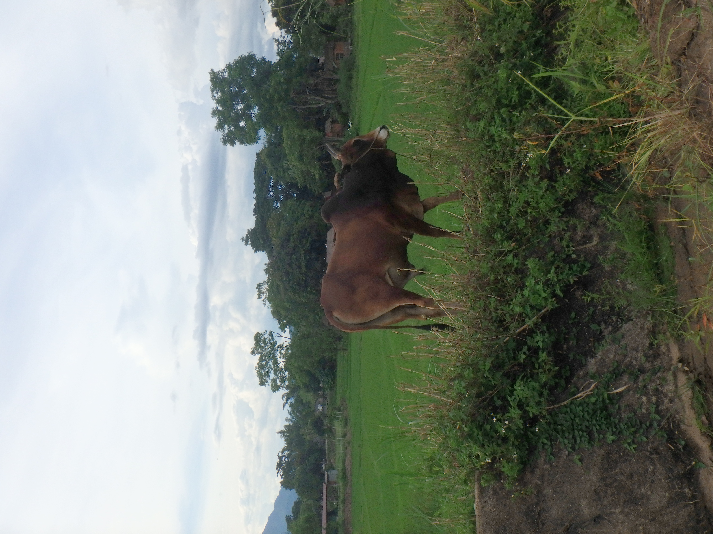
Rice fields and cattle.
Once back on the main road, I recross the bridge, walk past the 7/11, and turn down the alley towards my hostel. The sensation of my shoes and socks, which are spongy and filled with sand, has become unbearable. Sitting on a bench outside the dorm I kick off my shoes and peel away my wet socks, shaking the sand out. I'm tired, have a headache, and am soaked with sweat and river water. I am delighted to find, however, that I only gained a few mosquito bites during the hike. Once I take a shower and have some food from the street market, I feel calm and content. When night comes, I am keen to tuck myself into bed. I fall fast into a dreamless sleep, and when I wake in the morning there is no agenda. My only idea is to return to the café for more rice soup, which I do.
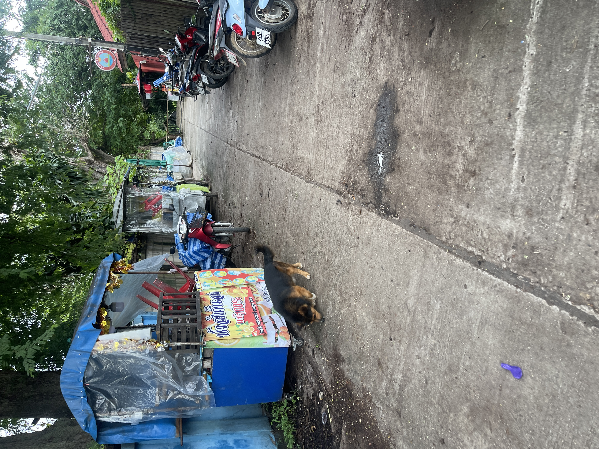
Postscript
Four days after my hike, I reluctantly left Pai and flew to Hanoi, Vietnam. This hike is just one of many reasons why I think fondly of my time spent in Pai. Since my photo journal from Asia is more extensive than my written one, it's an arduous process to recollect travel stories in writing. This story, however, is one of the few I did write down almost immediately after it happened. Thus, the recollection has an immediacy that would be difficult to reproduce for other moments of my life in Pai. My hope is that in this story you, the reader, are able to see the way that things *were*, not how they are to me nearly five months in the future.